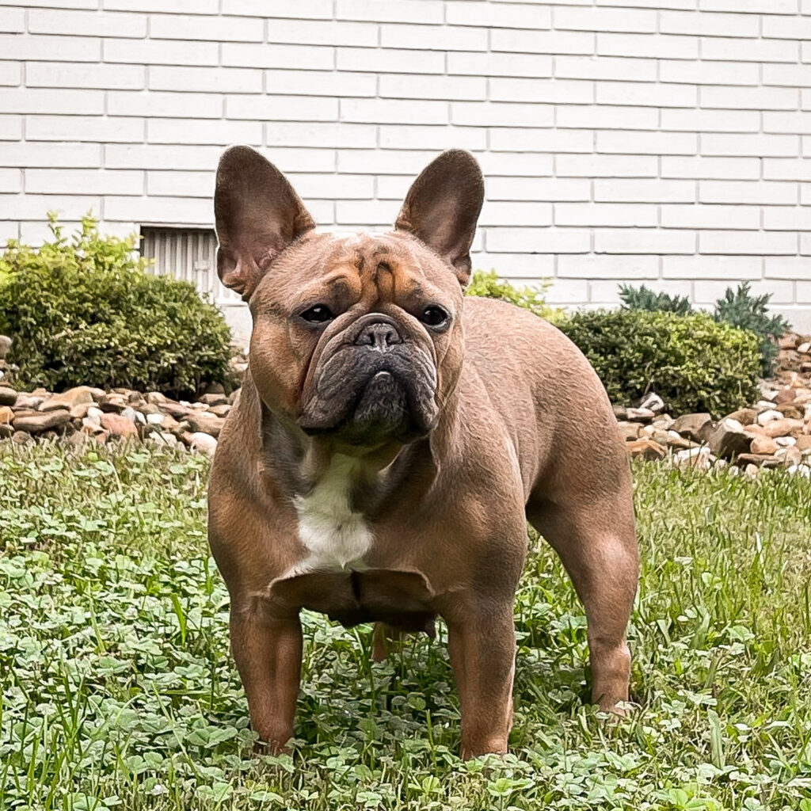
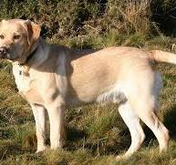
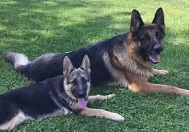

Frenchies have characterful faces and require little exercise and grooming, making them rise among popular dog breeds. They can experience health issues, and chronic skin problems plague dog breeds with skin folds.

Labs are notoriously curious and love their peeps. They have webbed feet and stamina, are mostly obedient, and adore humans. Registration statistics place them #1 as the most popular service dog breed.

Regal shepherds are service dogs willing to work for their owners and instinctively protect. A highly skilled German Shepherd is a valuable resource for police and military action. Rin Tin Tin, a German Shepherd movie star, has a star on Hollywood’s Walk of Fame.
Despite their pedigree that portrays them as a tad snobbish, poodles have a naughty side. Although of German origin, it’s the national dog of France.